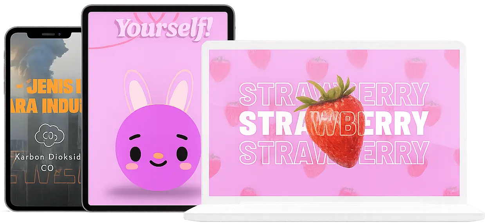

Template Canva Aesthetic
Buat Kontenmu Makin Kece & Menarik✨
Pilih Design Sesuka Kamu dan Edit Sesuka Kamu!
Template Canva ini cocok buat kamu yang kerjanya SATSET. tinggal pilih dan edit, sesimpel itu! iyaaa.
Kami menyediakan beberapa tema untuk kamu, mulai dari Template Presentasi - Feed Instagram - Walpaper Smartphone/Tablet/Pc/Laptop dan masih Banyak lagi!



100+ Template
Cepat & Praktis
Editable